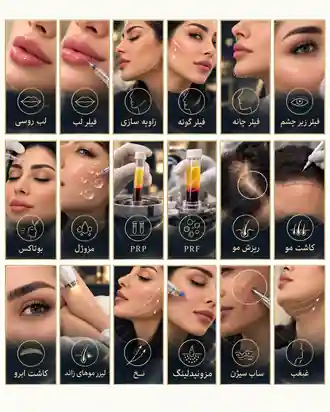

لب
فرم، قوس و تناسب
لب روسی · فیلر لب · Kiss Lip
بهجای تصویر تار و بزرگشده، هر مرحله با یک کادر بصری واضح و کنترلشده پیش میرود.
لب روسی · فیلر لب · Kiss Lip
زاویهسازی · فیلر گونه · فیلر چانه
فیلر زیر چشم · بوتاکس · مزوژل
PRP · ریزش مو · کاشت مو · کاشت ابرو
این کاراکتر شیت از تصاویر اینستاگرام ساخته شده تا زاویههای چهره، استایل، جزئیات لب و چشم و پالت رنگی در کل سایت هماهنگ بماند.

تامبنیلها از یک سیستم بصری مشترک استفاده میکنند تا صفحه خدمات سریع، قابل تشخیص و لوکس باشد.

همین زبان تصویری میتواند در صفحه هر خدمت، FAQ، بنرها، CTA و پستهای آینده ادامه پیدا کند.
تمرکز فعلی: کرج. اطلاعات دقیق مطب و شماره ثابت پس از تأیید نهایی اضافه میشود.